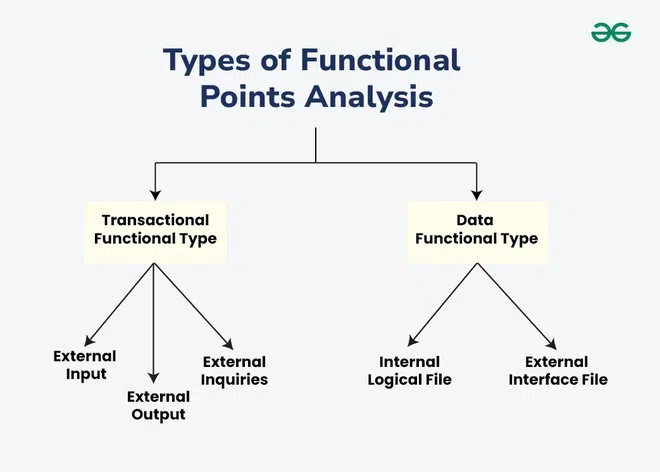
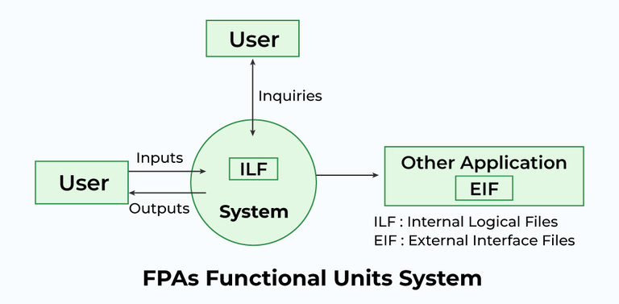

6.4 Function Point (FP) Analysis
Function Point Analysis (FPA) is a function-oriented (black-box) size metric developed by Allan J. Albrecht at IBM in 1979 and later standardised by IFPUG (1984). It measures software size based on functionality delivered to the user, not on lines of code or programming language. The result is a dimensionless number called function points (FP).
FP is preferred for business and information systems because the functional size of a system stays constant regardless of implementation language — the same requirements yield the same FP whether coded in Java, Python, or COBOL.

Five information-domain components
FP counts five types of user-visible functions in the information domain:
| Component | Abbreviation | Description | Examples |
|---|---|---|---|
| External Inputs | EI | User data or control sent into the application boundary | Input screens, forms, tables |
| External Outputs | EO | Data or control sent outside the application boundary | Reports, output screens, error messages |
| External Inquiries | EQ | Input-output combination resulting in data retrieval (no update) | Prompts, interrupts, lookup queries |
| Internal Logical Files | ILF | Logically related data maintained inside the application | Databases, directories, data structures |
| External Interface Files | EIF | Data referenced by this application but maintained by another system | Shared databases, shared routines |

Complexity weights (2D FP — information domain)
Each component is rated as Simple, Average, or Complex and multiplied by a weight:
| Measurement parameter | Simple | Average | Complex |
|---|---|---|---|
| External Inputs (EI) | 3 | 4 | 6 |
| External Outputs (EO) | 4 | 5 | 7 |
| External Inquiries (EQ) | 3 | 4 | 6 |
| Internal Logical Files (ILF) | 7 | 10 | 15 |
| External Interface Files (EIF) | 5 | 7 | 10 |
FP calculation steps
Step 1 — Count functions and compute Unadjusted Function Points (UFP)
- Count each EI, EO, EQ, ILF, and EIF; classify each as simple, average, or complex.
- Multiply each count by its weight and sum all weighted values.
- UFP = Σ (counti × weighti) for all five component types.
Example counts (average complexity):
| Parameter | Count | Weight | Weighted total |
|---|---|---|---|
| EI | 32 | 4 | 128 |
| EO | 60 | 5 | 300 |
| EQ | 24 | 4 | 96 |
| ILF | 8 | 10 | 80 |
| EIF | 2 | 7 | 14 |
| UFP total | 618 | ||
Step 2 — Rate 14 general system characteristics (fi)
Fourteen factors indirectly influence development effort. Each is rated on a scale of 0 (no influence) to 5 (essential):
- Reliable backup and recovery required
- Data communication required
- Distributed processing functions
- Performance critical
- Heavily utilised operational environment
- Online data entry required
- Online data entry over multiple screens/operations
- Master files updated online
- Complex inputs, outputs, files, or inquiries
- Complex internal processing
- Code designed to be reusable
- Conversion and installation included in design
- System designed for multiple installations/organisations
- Application designed to facilitate change and ease of use
Step 3 — Compute Complexity Adjustment Factor (CAF / EAF)
- CAF = 0.65 + 0.01 × Σ(fi), where Σ(fi) is the sum of all 14 factor ratings.
- When all factors = 0: CAF = 0.65 (minimum).
- When all factors = 5: Σ(fi) = 70, CAF = 0.65 + 0.70 = 1.35 (maximum).
- CAF range: 0.65 to 1.35.
Step 4 — Compute adjusted Function Points
- Unadjusted case: FP = UFP (no adjustment applied).
- Adjusted case: FP = UFP × CAF (also written FP = UFP × EAF).
Worked example
Given: EI=50, EO=40, EQ=35, ILF=6, EIF=4 — all at average complexity; all 14 factors rated average (3 each).
- Σ(fi) = 14 × 3 = 42; CAF = 0.65 + 0.01 × 42 = 1.07.
- UFP = (50×4) + (40×5) + (35×4) + (6×10) + (4×7) = 200 + 200 + 140 + 60 + 28 = 628.
- FP = 628 × 1.07 = 671.96.
GATE example (CS 2015)
I=30, O=60, E=23, F=8, N=2 with weights 4, 5, 4, 10, 7. Of 14 adjustment factors: 4 not applicable (0), four rated 3, and the remaining six rated 4.
- UFP = 30×4 + 60×5 + 23×4 + 8×10 + 2×7 = 120 + 300 + 92 + 80 + 14 = 606.
- Σ(fi) = 4×3 + 6×4 = 12 + 24 = 36; CAF = 0.65 + 0.36 = 1.01.
- FP = 606 × 1.01 = 612.06 — answer (A).
2D vs 3D function points
- 2D FP: Considers only the information domain — the five components above (inputs, outputs, inquiries, files, interfaces).
- 3D FP: Extends 2D FP by also considering the function domain and behaviour domain of the system.
- Both support unadjusted and adjusted (CAF/EAF) calculation.
Objectives and uses of FP
- FP supports early project estimation before coding begins — effort, time, and cost can be derived from FP counts.
- It enables benchmarking and comparison across projects and organisations using a common functional measure.
- It aligns development effort with business objectives by focusing on user-visible functionality.
- FP feeds empirical models such as COCOMO when size is expressed in function points rather than KLOC.
- FP is primarily used for business and information systems (MIS, banking, ERP) rather than real-time embedded systems.
FP vs LOC (summary)
| Aspect | Function Point (FP) | Lines of Code (LOC) |
|---|---|---|
| Basis | Specification-based (user functions) | Code-based (analogy to past projects) |
| Language | Language independent | Language dependent |
| Orientation | User-oriented | Design/implementation-oriented |
| When usable | Early in project (from requirements) | After or during coding |
| Best for | Data processing / business systems | Comparing productivity within same language |
See §6.5 for full LOC discussion and exam comparison.
Q1 (UGC-NET): LOC and FP are used to measure — (B) Size of Software.
Q2 (UGC-NET): Number of complexity adjustment factors in FP analysis — (C) 14.
Q3: Write the steps to calculate function points. What is CAF?
Model answer points:
- Count EI, EO, EQ, ILF, EIF; classify simple/average/complex; compute UFP = Σ(count × weight).
- Rate 14 general system characteristics (0–5 each); CAF = 0.65 + 0.01×Σ(fi); range 0.65–1.35.
- FP = UFP × CAF. Albrecht 1979; language independent; user-oriented black-box metric.
- Five components with weights: EI(3/4/6), EO(4/5/7), EQ(3/4/6), ILF(7/10/15), EIF(5/7/10).